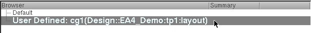
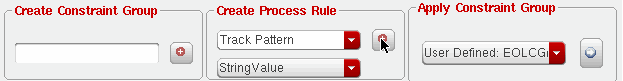
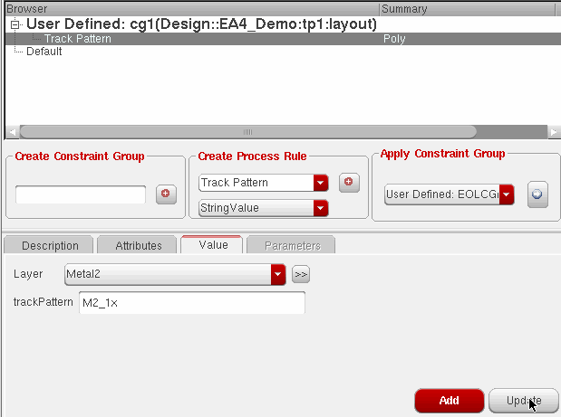
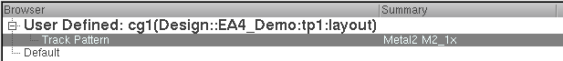
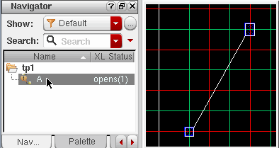
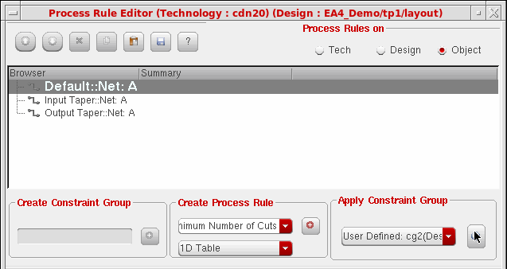
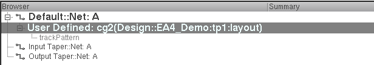

Assign Track Patterns to Nets
You can route a net on specific tracks. The procedures are described below:
-
Assigning track patterns to constraint groups
After creating the track patterns, assign them as constraints to a constraint group for track-based routing, in the same way you use spacing and width constraints to define spacing and width characteristics.
To assign track patterns to constraint groups: -
Use the Process Rule Editor from the Constraint Manager to add track pattern constraints to a constraint group.
Example Assigning track patterns to a constraint group- Follow the procedure Starting the Process Rule Editor.
- (Optional) Create a new constraint group.
-
In the Browser, click the name of the constraint group.
 -
In the Create Process Rule field, choose Track Pattern from the drop-down list, then click the plus (+) button.
 - With the track pattern selected in the Browser, click the Value tab at the bottom of the form.
- Choose the Layer for the tracks from the drop-down list.
-
In the trackPattern field, specify the name of the track pattern.
 -
If more than one track pattern is needed for the layer (for example, when the layer has bidirectional tracks), all the track patterns must be specified in a single track pattern constraint. To do this, separate the track pattern names using a plus (+) with no added spaces (for example,
M1_hor_1x+M1_ver_1x). - Click Update.
-
The Browser is updated with the layer name and track pattern.

-
Applying constraint groups to nets
After adding track patterns to a constraint group, you can now apply the constraint group to a net. The net will be routed on the specified tracks if you enable snapping to track patterns.
Example: Applying a constraint group to a net-
In the Navigator assistant, select the net.
 -
In the Process Rule Editor Apply Constraint Group section, choose the constraint group with the track pattern from the drop-down list, then click the Apply button.

 -
In the Navigator assistant, select the net.
The net can now be routed on the specified tracks using the Virtuoso wire editor, as described in
Return to top